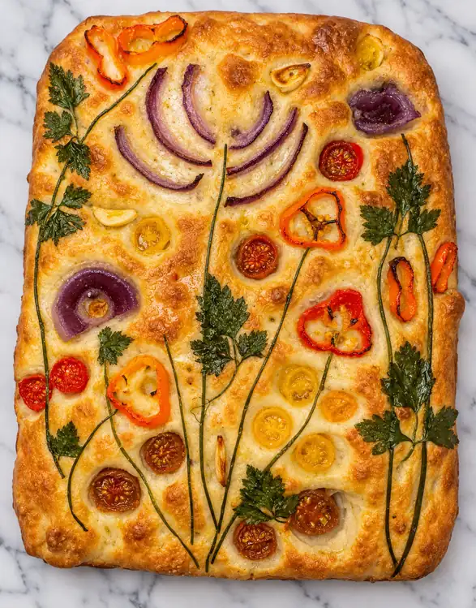
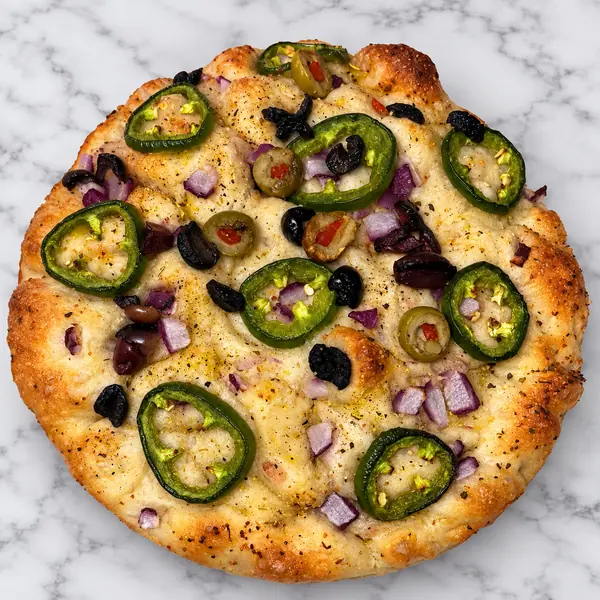
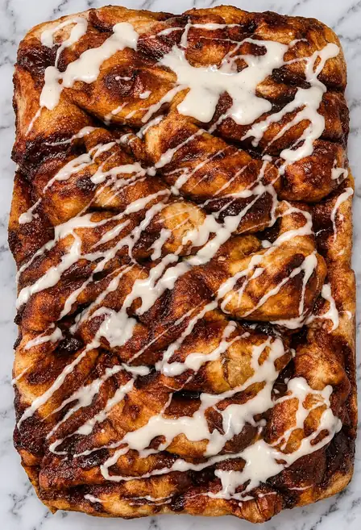

Artisan Breads
One starter.
Endless flavor
possibilities.
Focaccia and sourdough from one mother starter — savory and sweet, dimpled and blistered — made by hand on the southern Oregon coast.

Il Mercato
Wednesdays & Saturdays
9am ‘til sold out
Brookings-Harbor Farmers Market · Port of Brookings Harbor
Il Processo
Bend, snap, stretch, fold
Four moves, in that order, every time. It is the whole method that consumes the dough days.
I
Bend
The dough comes together slow. Organic flour, water, and a starter that has been going on since the silk trade days 900 years ago.
II
Snap
Air gets folded in, not beaten out. This is where the crumb is decided.
III
Stretch
Out to the corners by hand, never pressed flat by a machine.
IV
Fold
Rested, dimpled, drowned in extra virgin cold-pressed organic olive oil, and into the oven.
From the Board
What we are baking
The board turns over with the season and with the best and freshest our neighbors are growing.
Savory and organic ingredients — add what you want, leave out what you don’t.
Jalapeño, Olive & Red Onion
Fresh jalapeño, mixed olives, red onion and herbs across a golden, dimpled crust.
Olive & Sun-Dried Tomato
Green and kalamata olives with sun-dried tomato.
The Brown Buttered Cinnamon Roll
Flax seed oil butter. Coconut sugar.
Peppered Pickle Focaccia Muffins
Brookings Pickled Goodies’ spicy bread-and-butter pickles, infused right into the dough.
The Everything Focaccia
Poppy seeds, sesame seeds, onion and garlic.


Best Focaccia I’ve ever had. She definitely knows what she’s doing.
TonyandTasha Holden
It’s fluffy, it’s fresh, it’s flavorful. Must try.
Jessica Dora
This bread is made with love, so delicious that it compliments every meal.
Char Rigg
Turning it into a pizza was super fast and easy. It was delicious the way it is.
From the market table
100% recommend · 9 reviews
I Nostri Vicini
We bake with our town
Half of what goes into these loaves comes from someone we know by name.
Brookings Pickled Goodies
Their spicy bread-and-butter pickles, folded into our muffins.
Chetco Gold Raw Honey
Award-winning raw honey from the Chetco River, over our honey focaccia muffins.
The Dawg House
Monica builds her sandwiches on our bread, two stalls down.
Sylvia’s Farm Fresh Produce
Her jalapeños and apples, and so much more, go into the focaccia.
Come Wednesday. Come Saturday. Come early.
We bake small and we sell out. Questions, delivery or shipping — just write.
info@ohyoufancyfocaccia.comLove always, Oh! You Fancy Focaccia